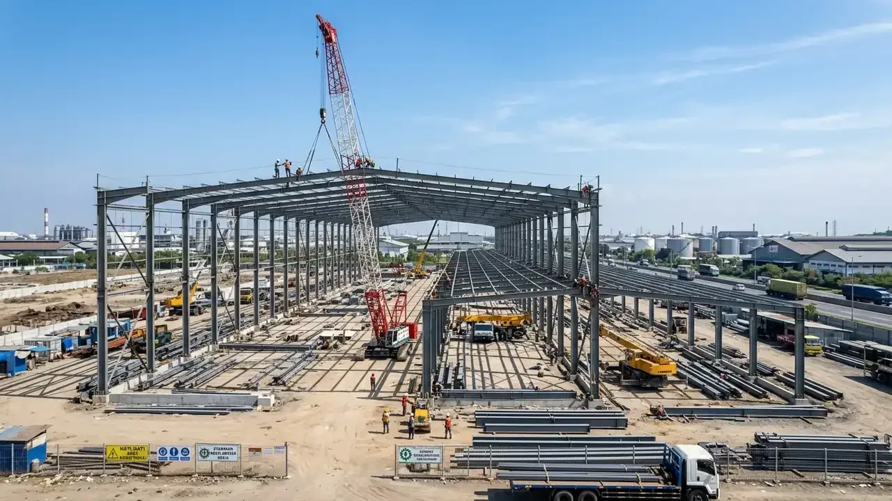

Mengapa Memilih Jasa Kontraktor Rumah Surabaya Berpengalaman Sangat Penting?
Kontraktor lokal berpengalaman memahami betul regulasi tata ruang Surabaya, kondisi tanah regional, serta jejaring suplier material terbaik untuk efisiensi biaya.
Kota Pahlawan memiliki peraturan tata kota yang ketat terkait Garis Sempadan Bangunan (GSB), Koefisien Dasar Bangunan (KDB), dan integrasi saluran drainase lingkungan. Berdasarkan data Asosiasi Kontraktor Perumahan Jawa Timur 2025/2026, lebih dari 32% proyek renovasi mandiri tanpa kontraktor di Surabaya mengalami masalah perizinan atau sengketa batas lahan dengan pengembang klaster perumahan.
Kontraktor Bangunan hadir dengan keunggulan menyeluruh:
- Paham Zonasi Tata Kota: Memastikan izin PBG diproses mulus melalui portal SIMBG Pemerintah Kota Surabaya tanpa kendala teknis.
- Material Khusus Iklim Panas: Penggunaan cat eksterior elastomeric tahan sinar UV tinggi, bata ringan hebel peredam panas, dan rangka atap baja ringan bersertifikasi SNI.
- Pengawasan Ketat Tim Ahli: Setiap tahap pembesian dan pengecoran disupervisi oleh site engineer berlisensi LPJK untuk memastikan rasio mutu beton tercapai maksimal.
Bagaimana Standar Spesifikasi Teknis Bangun Rumah Mewah di Surabaya?
Standar teknis mencakup pondasi strauss pile/pancang mini pile, beton struktur K-250/K-300, kusen aluminium powder coating tebal, dan lantai granit tile glazed porcelain.
Untuk menghasilkan bangunan yang kokoh sekaligus bernilai estetika tinggi, kami menerapkan standar spesifikasi premium pada setiap elemen konstruksi:
1. Struktur Bawah dan Pondasi
Mengantisipasi pergerakan tanah di Surabaya Barat dan Timur, pondasi tapak telapak dikombinasikan dengan strauss pile berdiameter 30 cm sedalam 6-12 meter hingga mencapai lapisan tanah keras. Balok sloof beton bertulang diikat kuat dengan angkur besi ulir SNI.
2. Dinding dan Insulasi Termal
Dinding utama menggunakan bata ringan AAC tebal 10 cm yang dipasang menggunakan mortar semen instan premium, dilapisi plesteran dan acian anti-retak. Pada sisi dinding yang terpapar langsung terik matahari barat, diaplikasikan lapisan insulasi termal tambahan.
3. Fasad dan Bukaan Alami
Pemanfaatan bukaan kaca low-e atau tempered glass dengan kusen aluminium anodized profil 4 inci merek premium, dipadukan dengan aksen conwood/panel WPC tahan cuaca dan batu alam lokal Jawa Timur.

Proses pekerjaan pembesian dan pengecoran struktur sloof beton bertulang berstandar SNI.
Tabel Komparasi Paket Pembangunan Rumah di Surabaya
Tabel komparasi menguraikan rincian harga per meter, spesifikasi material, dan kelengkapan layanan bangun rumah di wilayah Surabaya dan sekitarnya.
| Parameter Spesifikasi | Paket Standar Modern | Paket Premium Tropis | Paket Luxury Exclusive |
|---|---|---|---|
| Estimasi Biaya / m² | Rp3.800.000 – Rp4.500.000 | Rp4.800.000 – Rp6.000.000 | Rp6.500.000 – Rp9.500.000+ |
| Pondasi & Struktur | Strauss Pile + Balok K-225 | Mini Pile + Beton K-250 SNI | Spun Pile + ReadyMix K-300 |
| Lantai Utama | Granit Tile 60x60 cm Glazed | Granit Tile 80x80 / 60x120 cm | Marmer Import / Slab 120x240 cm |
| Sanitair & Keran | Merek TOTO / American Standard | TOTO Eco-Washer Series | TOTO Smart Sanitary / Kohler |
| Plafond & Atap | Gypsum 9mm + Spandek/Metal | Drop Ceiling + Genteng Keramik | Akustik Drop + Genteng Flat Beton |
| Izin PBG & Desain 3D | Desain 3D Standar + RAB | Desain 3D Visual + DED + PBG | Full BIM 3D Render + DED + PBG |
| Garansi Pemeliharaan | 6 Bulan Resmi | 12 Bulan Resmi | 12 Bulan + Jaminan Bocor 24 Bulan |
- Maksimalkan Bukaan Utara-Selatan: Rancang jendela utama menghadap sisi utara dan selatan untuk menangkap sirkulasi angin sepoi pesisir tanpa menyerap radiasi panas berlebih dari arah timur-barat.
- Terapkan Sistem Polder / Tandon Bawah Tanah Kedap Air: Karena elevasi tanah di beberapa bagian Surabaya relatif dekat dengan muka air laut, pastikan ground tank tandon bawah dicor beton bertulang dengan lapisan waterproofing coating crystalline tebal.
- Pilih Kontrak Fixed Price: Kunci skema kontrak borongan total dengan dokumen SPK rinci agar tidak terkena dampak fluktuasi kenaikan harga semen atau besi di pasaran.
Pertanyaan yang Sering Diajukan (FAQ)
Kesimpulan Praktis
Mewujudkan hunian berkelas di Surabaya membutuhkan kolaborasi bersama kontraktor terpercaya yang menguasai rekayasa teknis, estetika desain, dan transparansi anggaran. Wujudkan rumah idaman Anda bebas cemas bersama kami.